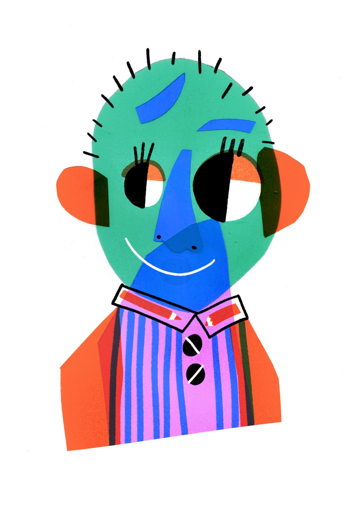

About
Nicole Tecchio is a young illustrator based in Padania. Her studies base on art history and editorial illustration, in particular on kids illustration. She graduated in Art History (DAMS) at Alma Mater Studiorum and in Editorial Illustration at ABABO in Bologna, both cum laude. Currently, she is attending an Editory master at University of Verona.
She is a beatiful person with the great ability of drawing funny things. Her interests go from music to collecting sticks, meshing together her different skills. She works as librarian in Mantua and Verona areas, especially with children through laboratories and readings about books, draws and music
She published two illustrated albi with Quinto Quarto Edizioni.